常见问题
G1 是否支持拓展坞？
不支持，edu版本会内置Jetson ORIN NX
Jetson Orin Nx WIFI 配置方法
AP模式：
1.借助create_ap进行ap模式的创建,仓库地址：https://gitcode.com/gh_mirrors/cr/create_ap.git
git clone https://gitcode.com/gh_mirrors/cr/create_ap.git cd ./create_ap/ make install2.安装必要的软件
sudo apt install -y hostapd dnsmasq network-manager3.连接该wifi，wifi的名字是MyAccessPoint
create_ap wlan0 eth0 MyAccessPoint具体的其他使用方式方法参考： https://gitcode.com/gh_mirrors/cr/create_ap/overview?utm_source=csdn_github_accelerator&isLogin=1
STA模式：
wap_cli配置WIFI方式
STA模式是常见的配置WIFI的方式，网上的教程很多，下面以wpa_cli为例 进入专用控制台,默认选择wlan0
wpa_cli1.添加网络，获取网络的ID号
add_network2.经过第（1）后得到一个ID号，假设ID号是1,然后连接你的wifi
set_network 1 ssid “your wifi name” ``` 3.设置连接的WIFI的密码 ```bash set_network 1 psk “your wifi key” ``` 4.使能WIFI ```bash enable_network 15.保存WIFI信息
save_config6.查看wifi连接状态
status7.退出
quitnmcli配置WIFI方式
部分用户发现wpa_cli无法使用，可以使用nmcli方式配置WIFI上网。
- 使能 waln0
sudo ifconfig wlan0 up
- 打开无线网卡
sudo nmcli radio wifi on
- 查看wifi是否使能
nmcli radio wifi
- 链接wifi
nmcli device wifi connect <SSID> password <password>
G1设备升级最新的固件≥1.3.0后，报关节限位异常，瞬间过压（Joint limt/Transient Over Voltage）
新的固件版本优化了关节标定精度，之前的标定有概率精度不满足要求，需要重新标定。
设备配置网络时，出现网络WiFi配置失败。
此问题多跟无线环境有关，尤其时展会等场所，无线环境比较复杂，干扰比较多。可以将G1设备带到干扰少一点的地方，尝试网络配置。
G1-29自由度设备，解锁腰部固定件(APP同步关闭锁腰开关)之后，报关节超限位错误。
原因：腰部两个关节电机没有标定。
解决方法：重新标定 ，可参考标定视频教程标定时，需要借助
腰部固定件给腰部电机卡限位。同时APP端，腰部电机锁定开关一定要设置为关闭状态
Jetson Orin NX系统恢复方法
镜像恢复流程可参考：
# G1 NX出厂镜像名称：g1_nx_Jetpack5.1.1_20250930.img.bz2 链接: https://pan.baidu.com/s/1GMs-DE8SSHYTSNIVKsoktw?pwd=7riu 提取码: 7riu # G1 NX出厂镜像历史版本(不推荐) 链接: https://pan.baidu.com/s/1yPnZ6hCGSEAlpht3YvNzAQ?pwd=1221 提取码：1221
- 把镜像烧写到第一步的NVME存储设备中，执行如下命令：
# g1_nx_Jetpack5.1.1_20250930.img.bz2 为镜像名称 bzip2 -dc g1_nx_Jetpack5.1.1_20250930.img.bz2 | sudo dd of=/dev/sdc status=progress
Jetson Orin NX系统恢复后磁盘扩容方法
烧录系统后，存在识别到的磁盘容量变小的情况，可以使用如下方法进行扩容。
前期准备
所需设备
- 安装有 Ubuntu 系统的电脑
- NVME M.2移动硬盘盒
后续所有操作均在安装有 Ubuntu 系统的电脑上进行。
软件安装
使用以下命令安装所需软件：
sudo apt update sudo apt-get install gparted操作流程
- 启动 gparted 工具，执行如下命令：
sudo gparted
- 弹出对话框后，选择
fix选项，操作如下图所示：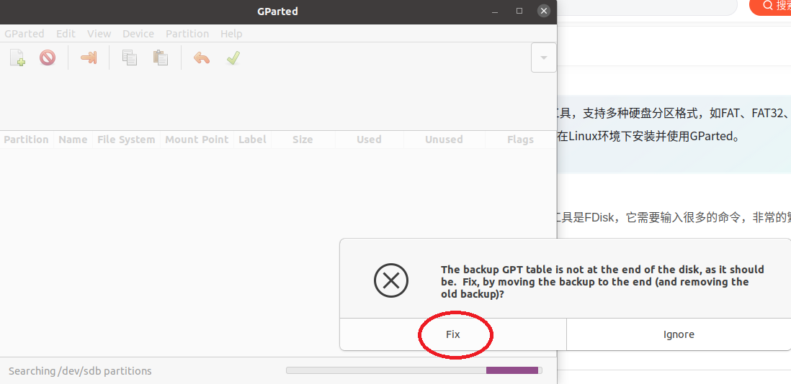
- 进入 Gparted 界面后，点击右上角区域，切换至需要进行设置的磁盘（选择已烧录 G1 系统的磁盘），操作如下所示：
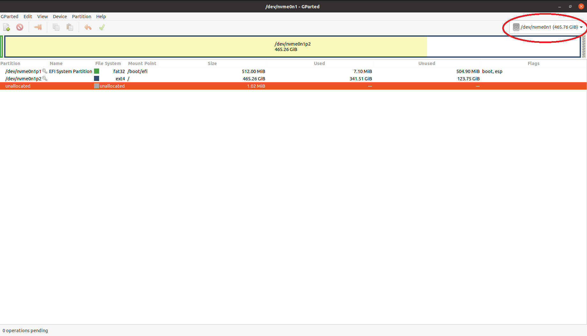
完成磁盘切换后，可查看磁盘中剩余的未使用空间，如下图所示：
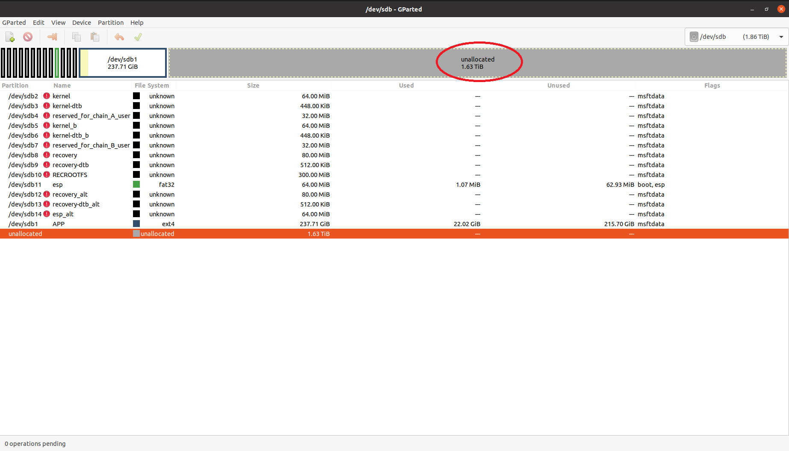
在
/dev/sdb1上点击鼠标右键，选择Resize/Move选项，如下图所示：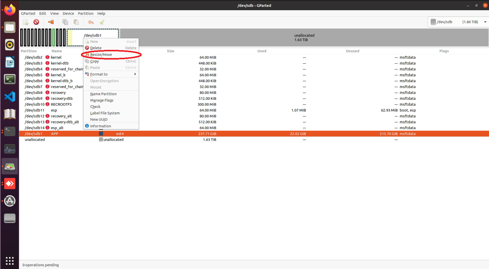
使用鼠标左键拖动对应下图红色区域至底部，操作如下图所示：
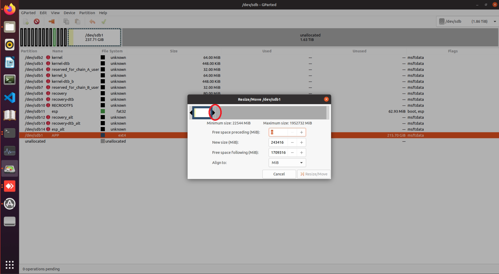
拖动完成后，界面状态如下图所示：
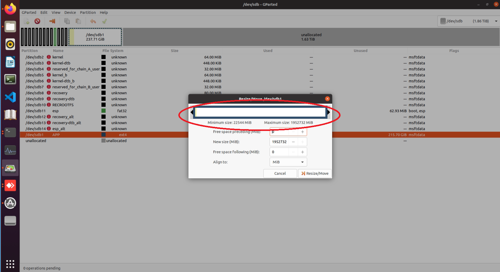
点击
Resize/Move按钮，如下图所示：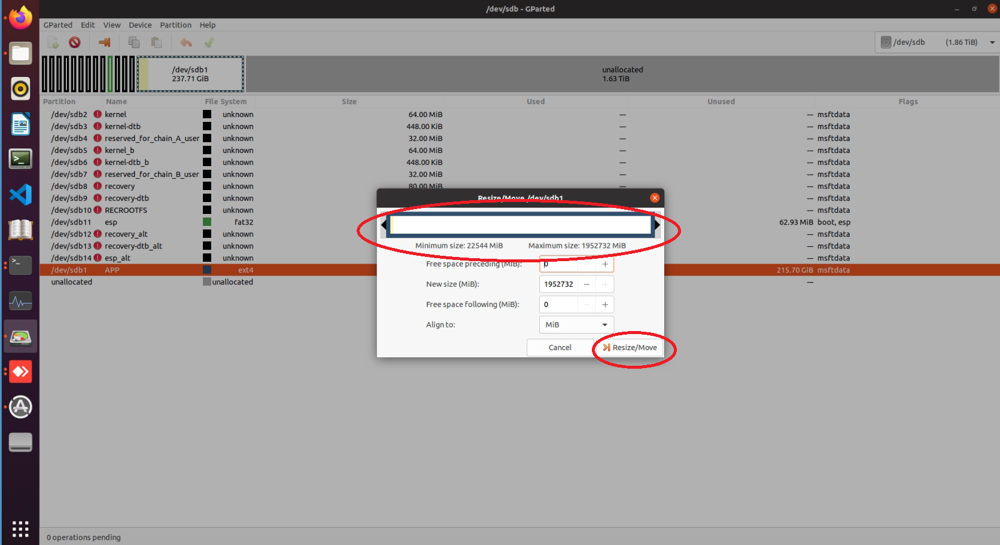
出现如下界面后，点击对号进行应用，如下图所示：
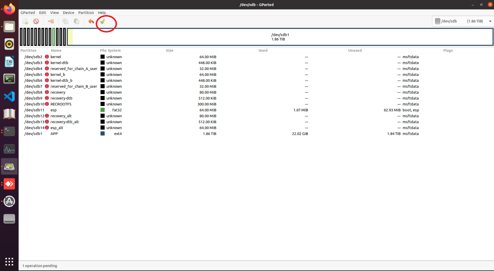
在弹出的界面中，点击
Apply按钮，如下图所示：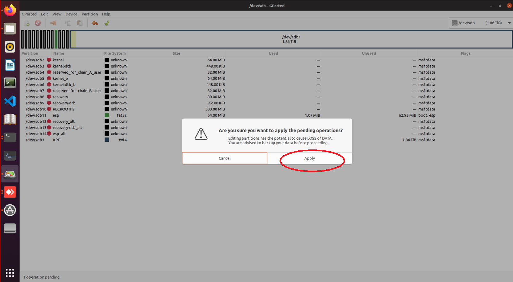
等待操作完成，如下图所示：
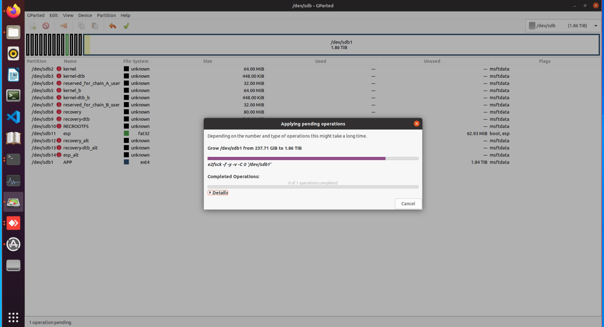
操作完成后，点击
Close按钮，如下图所示：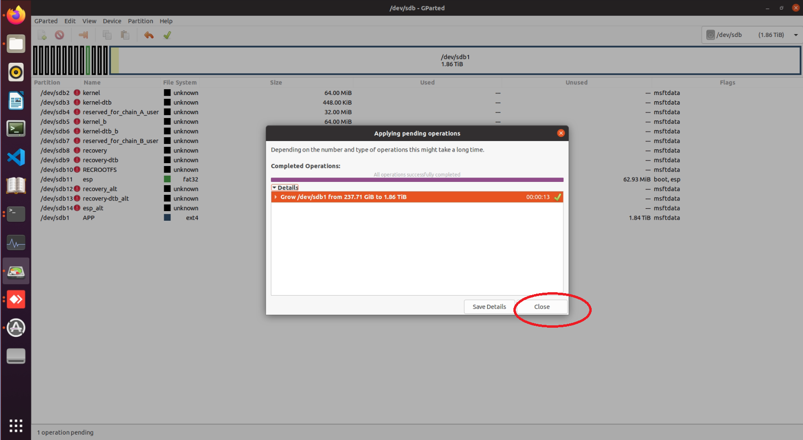
此时，G1 磁盘扩容操作已完成，可在电脑端弹出该磁盘，随后将其安装到 G1 设备上即可使用。
Jetson Orin NX系统恢复后wifi启用方法
注：g1_nx_Jetpack5.1.1_20250930.img.bz2镜像已经自带wifi，烧录后不需要使用该方法进行wifi启用。
使用以下命令安装所需软件工具：
sudo apt update sudo apt install dkms debhelper build-essential devscripts libncurses-dev flex bison libssl-dev下载wifi驱动deb安装包： wifi驱动安装包 下载完成解压后，可以看到
rtl8852bu-dkms_1.19.14_arm64.deb文件。 执行如下命令进行安装：sudo dpkg -i ./rtl8852bu-dkms_1.19.14_arm64.deb注意：wifi驱动的安装过程较长，请耐心等待，大概20~30分钟左右，查看是否在运行，可以通过如下命令：
sudo tail -f /var/lib/dkms/rtl8852bu/1.19.14/build/make.log安装完成后，使用如下命令进行重启：
sudo reboot重启后，可以通过以下命令查看wifi驱动是否正常：
ifconfig -a运行上面命令，出现以下内容，表明驱动安装成功。
unitree@ubuntu:~$ ifconfig -a ... ... wlan0: flags=4098<BROADCAST,MULTICAST> mtu 1500 ether fc:23:cd:8f:6f:f3 txqueuelen 1000 (Ethernet) RX packets 0 bytes 0 (0.0 B) RX errors 0 dropped 0 overruns 0 frame 0 TX packets 0 bytes 0 (0.0 B) TX errors 0 dropped 0 overruns 0 carrier 0 collisions 0
对于深度相机接入NX开发版的EDU+设备，Go界面无法预览视频流问题
检查接线
目前发货版本的G1 EDU+机器人默认已安装相关服务，若看不到画面，请确认脖子后方的USB-C线插入到肩部的Type-C接口上了。
是由于NX版缺少必要的补丁文件，需要将NX板升级必要的补丁文件，方法如下：
下载补丁文件
1、将压缩包文件拷贝到Nx板，IP:192.168.123.164 用户名：unitree 密码：123
``` scp ./g1plus_pc4_unitree_install.zip unitree@192.168.123.164:~/
2、ssh 登陆Nx板，IP:192.168.123.164 用户名：unitree 密码：123ssh unitree@192.168.123.164
3、切换到root权限，密码123sudo su root
4、解压g1plus_pc4_unitree_install.zip文件unzip g1plus_pc4_unitree_install.zip
5、进入g1plus_pc4_unitree_install目录，并执行install脚本chmod -R 777 /home/unitree/g1plus_pc4_unitree_install cd /home/unitree/g1plus_pc4_unitree_install/ rm /unitree/ -rf ./install
6、验证是否安装成功，通过PS命令查看master_service进程是否在线ps -ef | grep "master_service" | grep -v grep
以上操作完成之后，可以联系技术支持同事升级 - Patch PC4和Video Hub PC4组件更新到最新 - 重启设备
G1肩部板IO使用方法说明
G1-NX肩部板IO引脚说明
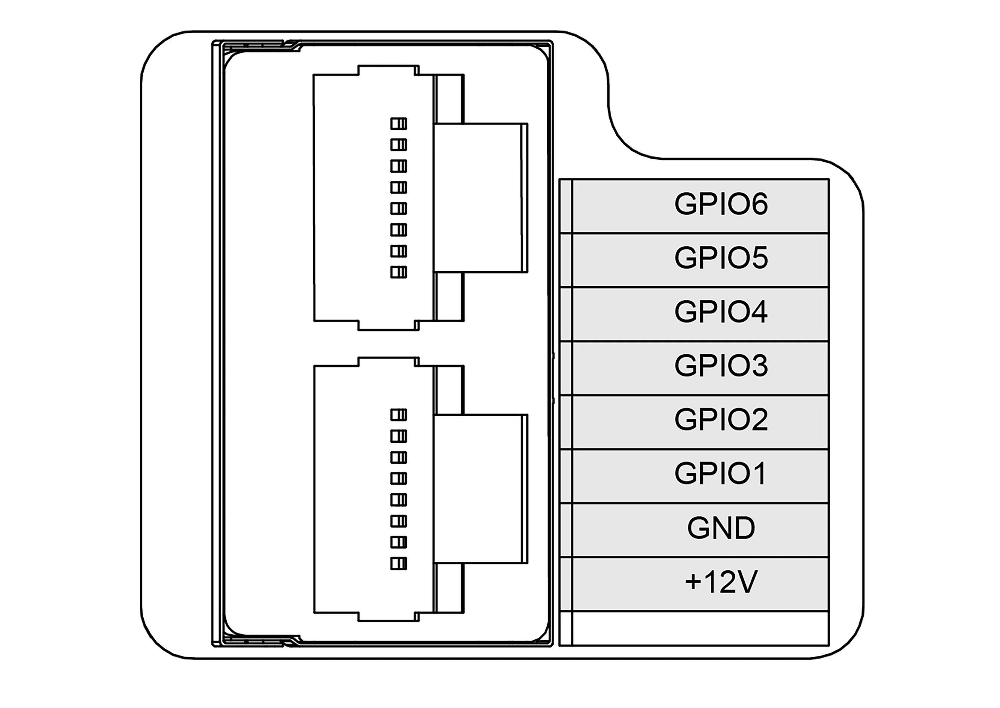
GPIO编号 功能 GPIO1 UART_TXD GPIO2 UART_RXD GPIO3 I2C_SCL GPIO4 I2C_SDA GPIO5 GPIO GPIO6 GPIO UART使用说明
串口参数：波特率9600，数据位8位，无校验，停止位1位。 G1系统启动后，GPIO1和GPIO2被配置为UART功能，可通过以下方法进行简单使用： ```bash
串口输出 test
echo "test" > /dev/ttyTHS0
查看串口接收到的数据
cat /dev/ttyTHS0
I2C使用说明
G1系统启动后，GPIO3和GPIO4被配置为I2C功能。 当I2C设备连接对应引脚后，可以使用如下命令探测设备：
root@ubuntu:/home/unitree# i2cdetect -y -r 0 0 1 2 3 4 5 6 7 8 9 a b c d e f 00: -- -- -- -- -- -- -- -- -- -- -- -- -- 10: -- -- -- -- -- -- -- -- -- -- -- -- -- -- -- -- 20: -- -- -- -- -- -- -- -- -- -- -- -- -- -- -- -- 30: -- -- -- -- -- -- -- -- -- -- -- -- -- -- -- -- 40: -- -- -- -- -- -- -- -- -- -- -- -- -- -- -- -- 50: 50 -- -- -- -- -- -- -- -- -- -- -- -- -- -- -- 60: -- -- -- -- -- -- -- -- -- -- -- -- -- -- -- -- 70: -- -- -- -- -- -- -- --GPIO使用说明
G1-NX系统启动后，GPIO5和GPIO6被配置为GPIO功能，可通过以下方法进行使用：
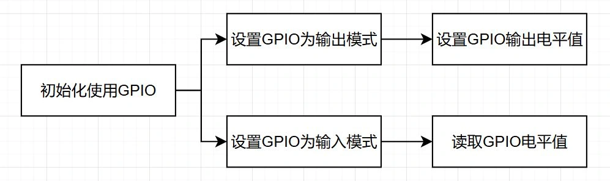
Sysfs接口控制GPIO
注意： 使用时，使用以下命令切换到root:
su root初始化使用GPIO
将GPIO从内核空间暴露到用户空间：
# 导出GPIO5（编号330） echo 330 > /sys/class/gpio/export # 导出GPIO6（编号331） echo 331 > /sys/class/gpio/export设置GPIO为输出模式
用于控制外部设备，如LED、继电器等：
# GPIO5设为输出 echo out > /sys/class/gpio/PCC.02/direction # GPIO6设为输出 echo out > /sys/class/gpio/PCC.03/direction输出模式下设置GPIO电平值
控制 GPIO 输出高电平（3.3V）或低电平（0V）：
# GPIO5输出高电平 echo 1 > /sys/class/gpio/PCC.02/value # GPIO5输出低电平 echo 0 > /sys/class/gpio/PCC.02/value # GPIO6输出高电平 echo 1 > /sys/class/gpio/PCC.03/value # GPIO6输出低电平 echo 0 > /sys/class/gpio/PCC.03/value设置GPIO为输入模式
如果需要将 GPIO 作为输入使用，使用如下方法：
# 设置GPIO5为输入模式 echo in > /sys/class/gpio/PCC.02/direction # 设置GPIO6为输入模式 echo in > /sys/class/gpio/PCC.03/direction读取输入模式下的 GPIO 值
当 GPIO 设为输入模式后，可读取外部输入的电平：
# 读取GPIO5的输入电平（0为低电平，1为高电平） cat /sys/class/gpio/PCC.02/value # 读取GPIO6的输入电平 cat /sys/class/gpio/PCC.03/value查看 GPIO 当前方向（输入 / 输出）
检查 GPIO 当前是输入还是输出模式：
# 查看GPIO5的方向 cat /sys/class/gpio/PCC.02/direction # 查看GPIO6的方向 cat /sys/class/gpio/PCC.03/direction释放GPIO
当不再使用GPIO时，需要取消导出以释放资源：
# 取消导出GPIO5（对应编号330） echo 330 > /sys/class/gpio/unexport # 取消导出GPIO6（对应编号331） echo 331 > /sys/class/gpio/unexportLibgpiod控制GPIO
需要先连接网络，并安装gpiod。该方法不需要登录root。
准备工作
sudo apt install gpiod映射关系
G1的GPIO对应Libgpio中的映射关系为：
GPIO sysfs Libgpiod GPIO5 PCC.02 gpiochip 1 14 GPIO6 PCC.03 gpiochip 1 15 G1一共有两块GPIO芯片，其中GPIO5、GPIO6在1号芯片上，其余在0号芯片上。可以通过
gpiodetect查看当前有几块芯片及其名称，通过gpioinfo [芯片号]来查看对应芯片下的IO口映射名称和状态。输出电平
Libgpiod会自动处理使能状态，通过命令
gpioset gpiochip[芯片号] [引脚映射号]=[电平]可以将GPIO引脚设置为输出模式，并指定电平。gpioset gpiochip1 14=0 gpioset gpiochip1 14=1读取电平
Libgpiod会自动处理使能状态，通过命令
gpioget gpiochip[芯片号] [引脚映射号]可以将GPIO引脚设置为输入模式，并读取电平。gpioget gpiochip1 14效果：
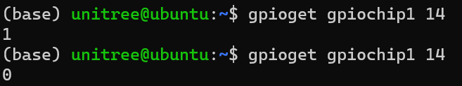